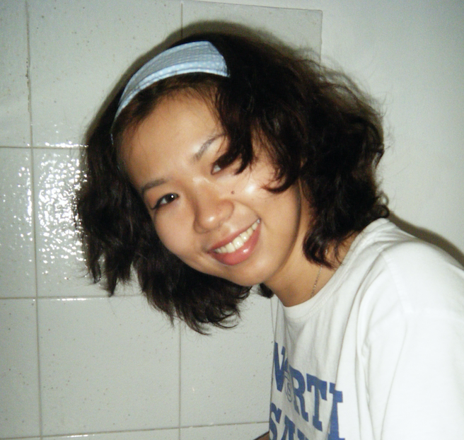

BEINI
MO

First an idea maker,
Second a visual designer.
Based in Milano, IT
EXPERIENCE
I create visual identities, campaigns and digital experiences. My practice brings together branding, promotional visuals, social media and motion graphics.
01—07 / 2026
Milano, IT
Milano, IT
Branding design assistant
AVOLTA · Food & Beverage Department
Brand concepts, visual communication and promotional design.
05—08 / 2025
Como, IT
Como, IT
Graphic design intern
REZZONICO DESIGN STUDIO
Event graphics, co-branding and presentation design.
06—09 / 2024
Remote
Remote
Social media design intern
Revive Battery
Campaign visuals and social media templates.
EDUCATION
Politecnico di Milano
MA Communication Design
2022—2025
Northeast University
BA Visual Communication
2018—2022
SKILLS
Illustrator / Photoshop / InDesign
After Effects / Figma / P5.jsChinese · Native
English · B2 / Italian · A2
After Effects / Figma / P5.jsChinese · Native
English · B2 / Italian · A2
02 / A selection of projects
Selected work
01 / 05